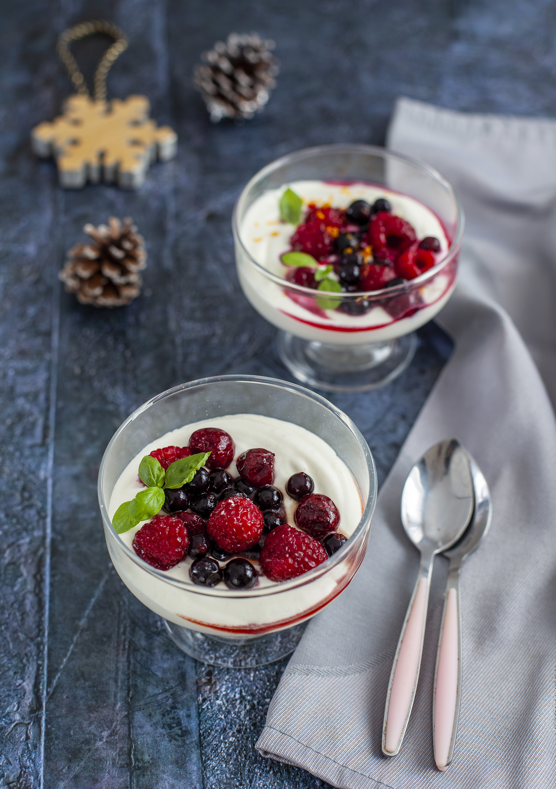

Этот крем с ягодами — адаптация десерта Йотама Оттоленги — удивительный по сочетанию ингредиентов и в то же время невероятно простой. Часть сливок заменена йогуртом. Очень удобный десерт, состоящий из минимума ингредиентов с минимумом телодвижений. И гарантированный успех, так как не требует никаких особых кулинарных навыков!
Десерт не хранится, но и готовится он на раз-два-три! Для Нового года он удобен тем, что основную часть — ганаш — можно приготовить заранее, а сборка десерта занимает считаные минуты.
Вместо «Ягермейстера» можно использовать любой травяной ликёр, в России также подойдут ликёры Tundra Bitter, сибирский бальзам «Пять озёр», ликёр Hunting бренда «Белуга».
Вместо алкоголя можно использовать сироп гренадин и апельсиновый сок, смешанные в равных пропорциях. Этот десерт удобен тем, что можно легко разделить ягоды на две порции, одну сделать с алкоголем, другую — без него (для детей или тех, кто алкоголь не употребляет). Чтобы различить разные составы, алкогольные можно украсить мятой, а с гренадином — цедрой апельсина или хлопьями миндаля.
Мы указали не 4 порции, а 6–8, потому что десерт, как торт, готовится сразу в довольно большом количестве. Во-первых, возможно, кто-то захочет добавки. Во-вторых, десерт отлично постоит 1–2 дня в холодильнике и порадует вас в следующие дни, хотя крем и станет плотнее. В-третьих, если за столом будет больше гостей, вам не придётся пересчитывать ингредиенты десерта.
Приготовление заранее: крем-ганаш можно приготовить накануне или за сутки и хранить в холодильнике.